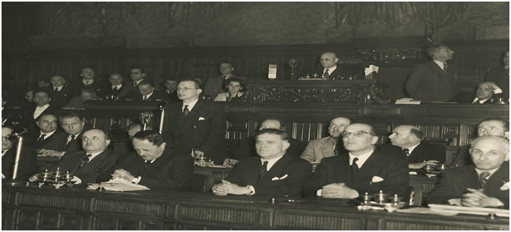

Inizialmente, la Commissione dei settantacinque aveva proposto un
articolo 7 che recitava:
“I cittadini, senza distinzione di sesso, di razza e lingua, di condizioni
sociali di opinioni religiose e politiche, sono uguali di fronte alla legge.
È compito della Repubblica rimuovere gli ostacoli d'ordine economico e
sociale che limitano la libertà e l'eguaglianza degli individui e
impediscono il completo sviluppo della persona”.
L’attuale formulazione dell’articolo 3 fu proposta, con identici
emendamenti, da esponenti dei gruppi democristiano e comunista.
Nel secondo comma venne adottata una formulazione che obbliga lo
Stato a garantire concretamente il principio di eguaglianza ribadendo
il fondamento costituzionale dei diritti sociali:
È compito della Repubblica rimuovere gli ostacoli di ordine economico
e sociale che, limitano di fatto la libertà e l'uguaglianza dei cittadini,
impediscono il completo sviluppo della persona umana e l'effettiva
partecipazione di tutti i lavoratori all'organizzazione politica,
economica e sociale dell'Italia”.
L’espressione 'Rimuovere gli ostacoli' fu molto criticata, ma Fanfani
faceva notare che: «Mentre fin dal tempo della Rivoluzione francese è
stata affermata l'eguaglianza giuridica dei cittadini membri di uno
stesso Stato, lo studio della vita sociale in quest'ultimo secolo ci
dimostra che questa semplice dichiarazione non è stata sufficiente a
realizzare tale eguaglianza».
Per questo motivo l’Assemblea decise, con le parole del secondo
comma, di impegnare il futuro legislatore a fare il possibile per
l'attuazione concreta dei principi di libertà e di eguaglianza di fronte
alla legge sanciti nel primo comma, garantendo la partecipazione dei
lavoratori alla vita sociale ed economica del Paese.
Questo articolo è stato interpretato in modo estensivo per includere
anche la protezione contro ogni forma di discriminazione, non solo in
termini di trattamenti disumani, ma anche in termini di diritti economici,
sociali e culturali.

Fonti:
Wikipedia
Fondata sul Lavoro (senato.it)